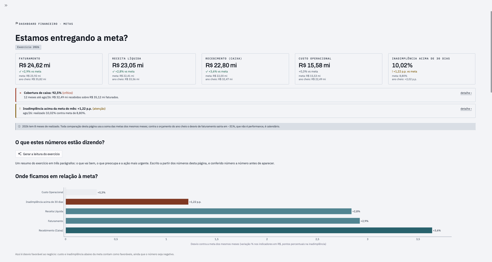
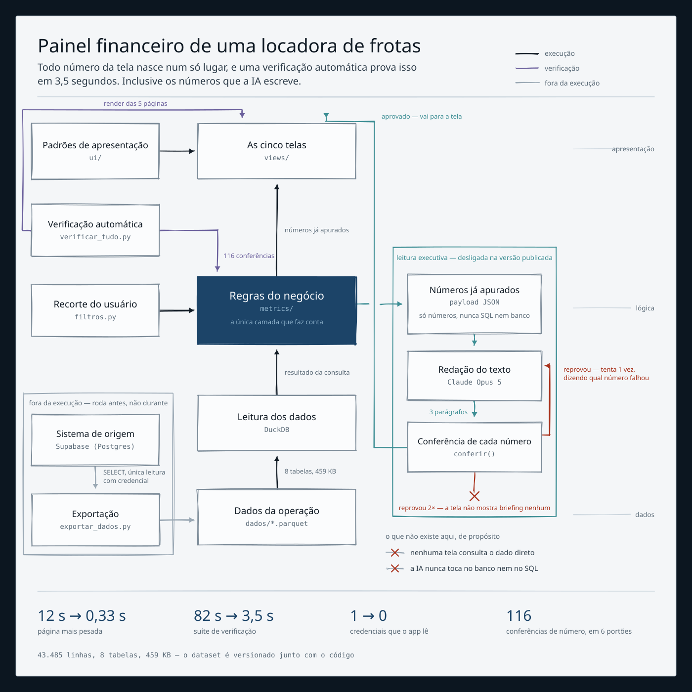
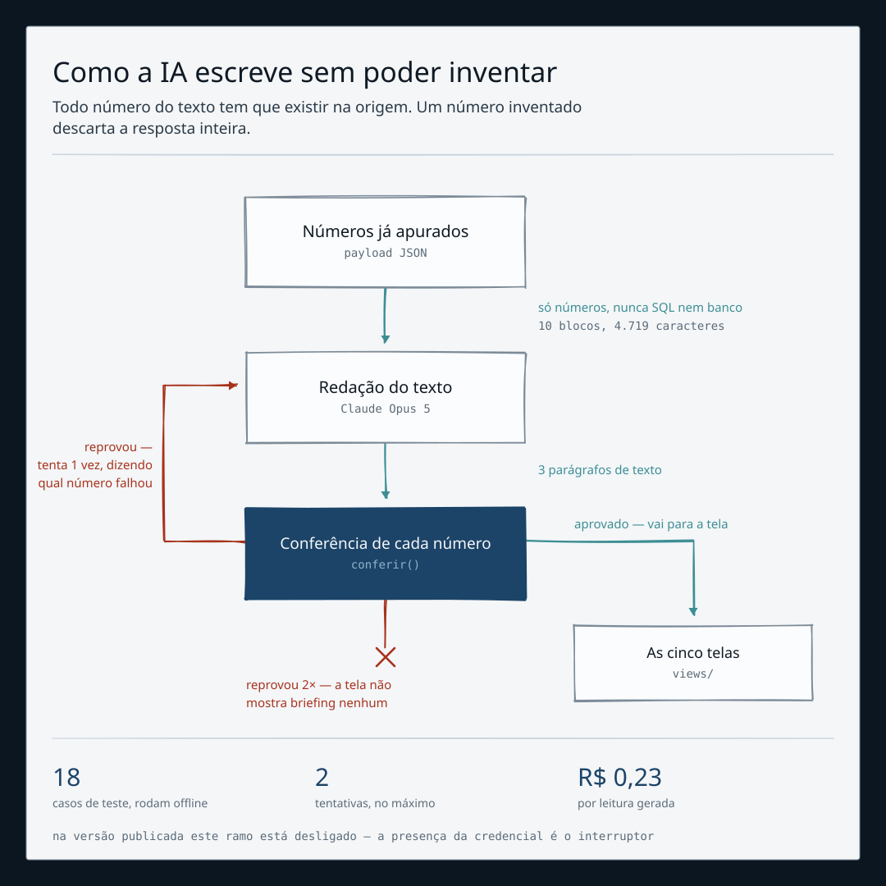

<!-- Carrossel para o LinkedIn. Abra no Chrome, Cmd+P, "Salvar como PDF".
     Sete páginas em 4:5, o formato mais alto que o feed aceita.
     Usa os tokens do Bancada e os arquivos desta mesma pasta. -->
<meta charset="utf-8">
<title>Carrossel — Dashboard Financeiro</title>
<link rel="preconnect" href="https://fonts.googleapis.com">
<link rel="preconnect" href="https://fonts.gstatic.com" crossorigin>
<link rel="stylesheet" href="https://fonts.googleapis.com/css2?family=Archivo:wght@500;600;700&family=IBM+Plex+Sans:wght@400;500;600&family=IBM+Plex+Mono:wght@400;500&display=swap">

<style>
:root{
  --escuro:#0C1620; --escuro-2:#131F2B;
  --papel:#F4F6F8;  --canvas:#E6EBEF;  --afundado:#DDE3E8;
  --tinta:#101A24;  --corpo:#2B3A47;   --fraco:#5B6B78;
  --gelo:#E8EEF2;   --gelo-2:#D2DEE6;  --gelo-fraco:#93A7B6;
  --fio:#CCD6DE;    --fio-escuro:#26384A;
  --prussia:#1C4468; --terracota:#A04A34; --teal:#3D8E94;
  --erro:#A8321C;   --ok:#1D6F5C;      --referencia:#9AA8B4;
  --sans:"IBM Plex Sans",system-ui,-apple-system,sans-serif;
  --mono:"IBM Plex Mono",ui-monospace,Menlo,monospace;
  --display:"Archivo","Arial Narrow",system-ui,sans-serif;
}
*{box-sizing:border-box;margin:0;padding:0}
body{background:#8894a0;font-family:var(--sans);-webkit-font-smoothing:antialiased}

/* 4:5 — 1080x1350 px a 96dpi. É a proporção que ocupa mais tela no feed. */
.tela{
  width:11.25in;height:14.0625in;position:relative;overflow:hidden;
  padding:0.95in 0.9in;display:flex;flex-direction:column;
  background:var(--papel);color:var(--tinta);
  margin:0 auto 24px;box-shadow:0 4px 24px rgba(0,0,0,.35);
}
.tela--escura{background:var(--escuro);color:var(--gelo)}
.tela--escura .kicker{color:var(--gelo-fraco)}
.tela--escura .rodape{color:var(--gelo-fraco);border-color:var(--fio-escuro)}

.kicker{
  font-family:var(--mono);font-size:13pt;letter-spacing:.14em;
  text-transform:uppercase;color:var(--fraco);margin-bottom:0.42in;
}
h1{font-family:var(--display);font-weight:700;font-size:47pt;line-height:1.06;
   letter-spacing:-.022em;text-wrap:balance}
h2{font-family:var(--display);font-weight:600;font-size:33pt;line-height:1.12;
   letter-spacing:-.018em;text-wrap:balance}
.sub{font-size:17pt;line-height:1.5;color:var(--corpo);margin-top:0.3in;max-width:26em}
.tela--escura .sub{color:var(--gelo-2)}
.pilha{display:flex;flex-direction:column;gap:0.3in;margin-top:auto;margin-bottom:auto}

.rodape{
  margin-top:auto;padding-top:0.2in;border-top:1px solid var(--fio);
  font-family:var(--mono);font-size:11.5pt;color:var(--fraco);
  display:flex;justify-content:space-between;align-items:center;
}
.pagina{font-variant-numeric:tabular-nums}

/* números grandes */
.numero{font-family:var(--display);font-weight:600;letter-spacing:-.02em;
        font-variant-numeric:tabular-nums;line-height:1}
.destaque{font-size:66pt;color:var(--prussia)}
.tela--escura .destaque{color:var(--gelo)}

/* linhas de dado */
.linhas{display:flex;flex-direction:column;gap:0.16in;margin-top:0.4in}
.linha{display:grid;grid-template-columns:1.1in 1fr auto;gap:0.24in;
       align-items:baseline;padding-bottom:0.16in;border-bottom:1px solid var(--fio)}
.linha:last-child{border-bottom:0}
.linha .rot{font-family:var(--mono);font-size:12pt;letter-spacing:.1em;
            text-transform:uppercase;color:var(--fraco)}
.linha .txt{font-size:15.5pt;line-height:1.35;color:var(--corpo)}
.linha .val{font-family:var(--display);font-weight:600;font-size:23pt;
            font-variant-numeric:tabular-nums;white-space:nowrap}
.val--alto{color:var(--terracota)}
.val--baixo{color:var(--ok)}

/* achados */
.achado{border-left:3px solid var(--terracota);padding-left:0.28in}
.achado + .achado{margin-top:0.42in}
.achado h3{font-family:var(--display);font-weight:600;font-size:22pt;
           line-height:1.2;letter-spacing:-.01em}
.achado p{font-size:15.5pt;line-height:1.45;color:var(--corpo);margin-top:0.12in;max-width:24em}
.achado--teal{border-left-color:var(--teal)}

/* moldura do artefato: a captura clara sobre o fundo escuro */
.moldura{background:var(--escuro-2);border:1px solid var(--fio-escuro);
         padding:0.22in;margin-top:auto;margin-bottom:auto}
.moldura img{display:block;width:100%;border:1px solid var(--fio)}
.legenda{font-family:var(--mono);font-size:11.5pt;color:var(--gelo-fraco);
         margin-top:0.18in;text-align:center;letter-spacing:.06em}

.figura{margin:auto 0;display:flex;align-items:center;justify-content:center}
.figura img{max-width:100%;max-height:9.6in;display:block}

.marcas{display:flex;gap:0.5in;margin-top:0.45in;flex-wrap:wrap}
.marca{flex:1 1 2in}
.marca .n{font-family:var(--display);font-weight:600;font-size:30pt;
          color:var(--prussia);font-variant-numeric:tabular-nums}
.tela--escura .marca .n{color:var(--gelo)}
.marca .d{font-size:13.5pt;color:var(--fraco);line-height:1.35;margin-top:0.06in}
.tela--escura .marca .d{color:var(--gelo-fraco)}

.lista{list-style:none;display:flex;flex-direction:column;gap:0.22in;margin-top:0.4in}
.lista li{padding-left:0.34in;position:relative;font-size:16pt;line-height:1.42;
          color:var(--corpo);max-width:25em}
.tela--escura .lista li{color:var(--gelo-2)}
.lista li::before{content:"";position:absolute;left:0;top:.62em;
                  width:0.18in;height:2px;background:var(--referencia)}
.lista b{font-weight:600;color:var(--tinta)}
.tela--escura .lista b{color:var(--gelo)}

.link{font-family:var(--mono);font-size:16pt;color:var(--gelo);
      border-bottom:1px solid var(--gelo-fraco);padding-bottom:2px}

@media print{
  @page{size:11.25in 14.0625in;margin:0}
  body{background:#fff}
  .tela{margin:0;box-shadow:none;break-after:page;page-break-after:always}
  .tela:last-child{break-after:auto;page-break-after:auto}
}
</style>

<!-- 1 ................................................................. -->
<section class="tela tela--escura">
  <div class="kicker">Análise de crédito</div>
  <div class="pilha">
    <h1>Os clientes que mais atrasam são os que têm o maior limite aprovado.</h1>
    <p class="sub">Não é erro de cadastro. É uma política que ninguém revisou.</p>
  </div>
  <div class="rodape"><span>Ronald Martins</span><span class="pagina">1 / 7</span></div>
</section>

<!-- 2 ................................................................. -->
<section class="tela">
  <div class="kicker">O rating funciona</div>
  <h2>Um cliente nota D atrasa 25 vezes mais que um nota A.</h2>
  <div class="linhas">
    <div class="linha"><span class="rot">Rating A</span>
      <span class="txt">5 clientes · limite médio R$ 506.600</span>
      <span class="val val--baixo">0,67%</span></div>
    <div class="linha"><span class="rot">Rating B</span>
      <span class="txt">25 clientes · limite médio R$ 574.154</span>
      <span class="val">5,64%</span></div>
    <div class="linha"><span class="rot">Rating C</span>
      <span class="txt">16 clientes · limite médio <b>R$ 758.529</b></span>
      <span class="val val--alto">16,38%</span></div>
    <div class="linha"><span class="rot">Rating D</span>
      <span class="txt">9 clientes · limite médio R$ 606.600</span>
      <span class="val val--alto">16,94%</span></div>
  </div>
  <p class="sub" style="margin-top:0.5in">
    O rating classifica bem. Mas os clientes C, que erram 16,4%, têm o
    <b>maior limite médio da base</b>, 50% acima dos A, que praticamente não atrasam.
  </p>
  <div class="marcas">
    <div class="marca"><div class="n">R$ 1,33 mi</div>
      <div class="d">em aberto acima dos tetos aprovados</div></div>
    <div class="marca"><div class="n">13 de 49</div>
      <div class="d">clientes passaram do próprio limite</div></div>
  </div>
  <div class="rodape"><span>Inadimplência acima de 30 dias, em 31/08/2026</span>
    <span class="pagina">2 / 7</span></div>
</section>

<!-- 3 ................................................................. -->
<section class="tela tela--escura">
  <div class="kicker">O painel</div>
  <h2 style="font-size:28pt">Cinco telas, uma pergunta de negócio cada.</h2>
  <div class="moldura">
    
    <div class="legenda">metas · faturamento e recebimento · inadimplência · custos</div>
  </div>
  <div class="rodape"><span>Streamlit · DuckDB · Plotly</span>
    <span class="pagina">3 / 7</span></div>
</section>

<!-- 4 ................................................................. -->
<section class="tela">
  <div class="kicker">Mais dois achados</div>
  <div class="pilha">
    <div class="achado">
      <h3>Os veículos parados não estão esperando cliente. Estão quebrados.</h3>
      <p><b>40,5%</b> do custo de um veículo sem contrato é manutenção e pneu.
         Não é problema comercial, é de oficina.</p>
    </div>
    <div class="achado achado--teal">
      <h3>A empresa gasta 3,7 vezes mais consertando do que prevenindo.</h3>
      <p>R$ 8,00 mi de manutenção corretiva contra R$ 2,16 mi de preventiva.
         É a decisão mais cara do painel de custos, e está sendo tomada por omissão.</p>
    </div>
  </div>
  <div class="rodape"><span>Composição de custo, jan/24 a ago/26</span>
    <span class="pagina">4 / 7</span></div>
</section>

<!-- 5 ................................................................. -->
<section class="tela">
  <div class="kicker">Por que o número é confiável</div>
  <h2 style="font-size:27pt">Todo número nasce num só lugar.</h2>
  <div class="figura"></div>
  <div class="rodape"><span>6 portões automáticos · 3,5 s</span>
    <span class="pagina">5 / 7</span></div>
</section>

<!-- 6 ................................................................. -->
<section class="tela">
  <div class="kicker">A IA não pode inventar</div>
  <div class="figura"></div>
  <p class="sub" style="margin-top:0;text-align:center;max-width:none">
    Ele já reprovou de verdade, na primeira execução contra a API.
  </p>
  <div class="rodape"><span>Claude Opus 5 · verificação de procedência</span>
    <span class="pagina">6 / 7</span></div>
</section>

<!-- 7 ................................................................. -->
<section class="tela tela--escura">
  <div class="kicker">O que está aberto</div>
  <div class="pilha">
    <h2>Painel no ar e código aberto.</h2>
    <ul class="lista">
      <li><b>116 verificações</b> comparam o que a camada de métricas calcula com números já conferidos</li>
      <li><b>6 portões</b> rodam em 3,5 segundos e barram desde nome de coluna vazando na tela até contraste insuficiente para quem tem daltonismo</li>
      <li>O dataset viaja junto com o código: a página mais pesada saiu de <b>12 s para 0,33 s</b></li>
      <li>Cinco documentos de projeto registram <b>por que</b> cada decisão foi tomada, incluindo as revertidas</li>
    </ul>
    <p class="sub" style="margin-top:0.5in">
      <span class="link">Links no primeiro comentário</span>
    </p>
  </div>
  <div class="rodape"><span>Dataset sintético, criado para demonstração</span>
    <span class="pagina">7 / 7</span></div>
</section>
